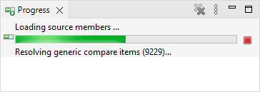

Synchronize Members Editor Performance

Introduction
Talking about performance is always difficult. Of course you can measure the
time a transaction takes and depending of the value the performance was good
or bad. But what is "good" or "bad"? That is not clearly defined and often
depends on personal expectations. What is "good" for one person is not necessarily
good for another person and vice versa.
Comparing the source code of two libraries is a lot of work. It requires the
following steps:
- Get the source files of the libraries
- Enumerate the members of each source file
- Calculate and store a checksum for each member
- Retrieve and store the time each member was last changed
The "iSphere Synchronize Members Editor" stores all these information in a table
and then downloads it to the PC. On the PC the data is evaluated and the result
is presented in a table.
Real Data
Here are some performance data that was gathered on an IBM i model "9105-42A". Feel
free to use it to build your opinion about the performance of the "iSphere Synchronize
Members Editor".
| Compared items: | 2 Libraries |
| Source files per library: | 27 |
| Number of members of left library: | 60404 |
| Number of members of right library: | 60125 |
| Total number of members: | 120529 |
| Total time used in minutes: | 7:15 |
| Time per member in milliseconds: | 3,6 |
In my personal opinion, 7:15 minutes is a good value, knowing that this is only 3,6
milliseconds per source member. How long would you need if you did that by hand?
Unfortunately I was not able to get the progress bar working well. From time to time it
gets stuck when the job calls the "List Database File Members" (QUSLMBR) API and spins
through the member list calculating the checksums. At this point I do not know the total
number of members in advance and therefore I can not update the progress bar properly.
But feel free to open the "Progress" view. It will not update the bar, but at least it updates
the number of members processed:

By the way, the text is "Resolving generic compare items...", because technically the
SYNCMBR service program can use generic member names.
Changing UI Filter
Changing the table filter is also a relatively slow task. I was able to increase performance
up to a certain limit and I do not think that I can get it better. Before the optimization it
took up to 50 seconds to update the table filter. Now it takes between 0.5 and 5 seconds for
approximately 60000 lines, depending on the requested action.